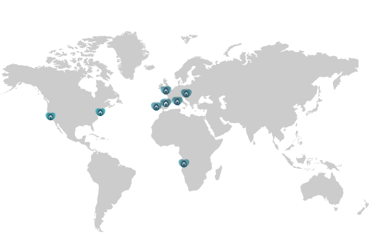

Onde Actuamos
A MAIDSin é uma agência de empregadas domésticas que actua em Portugal, de norte a sul do país, e no mercado internacional com maior incidência em Espanha, Suíça, França, Inglaterra Alemanha e EUA, tendo já desenvolvido diversos processos de selecção e colocação bem-sucedidos. Com escritório em Lisboa e no Porto, é especializada no recrutamento, selecção e colocação de empregadas domésticas.
O que os nossos Clientes dizem...
"Trabalho e tenho 3 filhos! Só confio na MAIDSin para contratar as empregadas domésticas para cuidar de minha casa e dos meus filhos. Total confiança e um serviço totalmente personalizado."
Maria Bernardo, Porto, Portugal
“Contratei uma empregada através da MAIDSin e correu tudo na perfeição. Foram impecáveis nos critérios de seleção e no aconselhamento que me deram posterior à contratação. ACONSELHO!”
Cristina Oliveira Martins, Cascais, Portugal
“Recorri aos serviços da MAIDSin para uma empregada interna para residir no estrangeiro NY. Com todos os desafios que implica uma contratação à distância, só posso recomendar os serviços da MAIDSin. Apresentaram candidatas com o perfil pedido, fizemos entrevistas via FaceTime Messenger, deram apoio possível para pedido de visto. Acompanhamento e disponibilidade foram constantes ao longo de um longo processo e que chegou a bom porto!”
Joana Estrela, Nova Iorque
“Já trabalhámos com várias agências, mas de facto a MAIDSin foi de uma eficácia, objetividade e dedicação ímpar. Conhecia as candidatas e acima de tudo foi muito prestável a ajudar a tomar decisões. Sugiro muito!”
Mónica Albuquerque, Lisboa, Portugal
"Moro em Madrid desde 2011 e procurei em várias agências uma empregada Filipina, pois sempre tive as melhores referências e os meus filhos estudam num colégio Inglês. A MAIDSin foi-me indicada por uma amiga e no próprio dia tive o feedback com CV´s que se adaptavam perfeitamente ao meu pedido. Fizemos de imediato a entrevista via skype com a candidata seleccionada. Há 3 anos que tenho a empregada e foi sem dúvida, a melhor empregada que eu e a minha família tivemos. A segurança que esta agência me transmitiu, não me requereu dúvidas nenhumas que se justifica contactar profissionais. Obrigada MAIDSin!!"
José Pinto de Sousa, Madrid, Espanha
“MAIDSin is a nothing short of a miracle! They are incredibly responsive, professional, and helpful. In a matter of hours, they found two great housekeepers and caregivers for our family with two boys. I’ve been working with different agencies for 9 years and MAIDSin is by far the best of the best. Thank you!”
Elena Lytkina Botelho, Lisboa, Portugal
“A melhor experiência possível. São super. Adoro! Muito obrigada.”
Mariama Barbosa, Lisboa, Portugal
“Maravilhosa! Recomendo vivamente. Rapidez, eficiência e qualidade do serviço”
Teresa D’Orey Froes, Lisboa, Portugal
“Nesta fase tão exigente e desafiante a trabalhar em casa com duas crianças para orientar, consegui a ajuda que tanto precisava, a partir de agora vai tudo ficar melhor. Obrigada, MAIDSin”
Alexandra Beck, Lisboa, Portugal
"Tive uma enorme dificuldade em encontrar uma boa empregada que falasse português e que conhecesse bem a nossa cultura, culinária, hábitos e costumes. No dia em que contactei a MAIDSin o meu problema ficou resolvido. A Maria do Céu está comigo já há 4 anos e faz parte da nossa família. Obrigada pelo vosso profissionalismo, dedicação e celeridade em todo o processo."
Rosário Vasconcelos, Berlim, Alemanha
Muito contente com a disponibilidade e qualidade que a MAIDSin me apresentou durante todo o processo. O profissionalismo, a atenção e a velocidade ao encontrar uma solução para a minha família faz com que a recomende a toda a gente que precise destes serviços.
João Mário, Lisboa, Portugal
“Já utilizei os serviços da empresa três vezes e tenho ficado sempre satisfeita. É uma empresa de confiança e que se preocupa em ir de encontro às necessidades específicas de cada cliente. Parabéns e obrigada pelo bom serviço :)”
Catarina Mena, Lisboa, Portugal
“MAIDSin was fantastic in helping us! Choice, efficiency, and professionalism! Would recommend Maidsin’s service many times over…”
Chitra Stern, Cascais, Portugal
"Solicitei os serviços da empresa MAIDSin no sentido de encontrar uma empregada doméstica que teria de respeitar alguns requisitos para mim fundamentais. Num curto espaço de tempo tive 5 alternativas de pessoas para entrevistar, das quais selecionei uma. Recebi por parte da MAIDSin todas as informações referentes a contrato, segurança social , informações essenciais para o bom funcionamento deste serviço que considero de qualidade e eficiência, juntando também a simpatia."
Piedade Líbano Monteiro, Lisboa, Portugal
“Bastante satisfeito com a qualidade e profissionalismo com que fui recebido quando entrei em contacto com a MAIDSin. Sempre disponíveis para ajudar na busca da melhor solução para o cliente. E durante todo o processo de recrutamento, prestam auxílio e esclarecem qualquer tipo de dúvida.”
João Pereira, Turquia
“Obrigado MAIDSin! Vocês são as melhores! Colocaram um anjo lá em casa!”
Carlos Belem, Estoril, Portugal
“I used this service several times since I came to Portugal, and its simply EXCELENT! Highly recommend it! Thank you for a great professional service, carefully selected candidates, and the attention to the details :)”
Besma Kraiem, Cascais, Portugal
"Conto com a MAIDSin e com esta empresa desde que a descobri em 2010. Sempre me ajudaram nas mudanças de vida que tive e, encontraram sempre a pessoa certa! Só confio na MAIDSin para escolher pessoas cá para casa. Tratam de tudo por nós! Aconselham-nos e estão sempre disponíveis!! São a empresa mais profissional que já conheci, recomendo a todas as minhas amigas e a todas as pessoas que me perguntam onde arranjei as empregadas excepcionais que tenho em casa! Obrigada MAIDSin!"
Maria Bagulho, Lisboa, Portugal
“I contacted Inês from MAIDSin on a short notice, and because of matters out of my control, I had to change schedules, and arrangements again and again, Inês was patient with me, very professional, flexible and did her very best to accommodate my requests. Would recommend this company, as I believe is excellent, and will definitely be in touch if I return to live in Cascais. Thanks again."
Phyllis Mifsud, Cascais, Portugal
“Já trabalhámos com várias agências, mas de facto a MAIDSin foi de uma eficácia, objetividade e dedicação ímpar. Conhecia as candidatas e acima de tudo foi muito prestável a ajudar a tomar decisões. Sugiro muito!”
Mónica Albuquerque, Lisboa, Portugal
"Very professional and trustful. I have had good experience working with MAIDSin and recommend the service anytime."
Christiane Burgschat, Suiça / Portugal
“Recomendo 100%. Rapidez no processo, simpatia e eficiência. Foram de encontro às necessidades da nossa família que se encontra no estrangeiro. Estamos muito contentes e agradecidos.”
Margarida Neuparth e Adrien Silva, Itália
“Resposta em tempo record ao pedido que fiz e acertando muito bem no briefing que dei. A empregada que precisava era para estar com uma pessoa idosa o que nem sempre é fácil e a candidata selecionada pela MAIDSin correspondeu perfeitamente ao que foi pedido. Recomendo, obrigada.”
Cristina Monteiro, Estoril, Portugal
“Gostei imenso do trabalho da MAIDSin. As candidatas que entrevistei enquadravam-se todas naquilo que eram as minhas necessidades e expectativas. Encontrámos uma pessoa fantástica que, para além de executar todas as tarefas com perfeição, sabe adequar-se às mudanças que por vezes ocorrem nas nossas rotinas. Muito obrigada pelo vosso profissionalismo!”